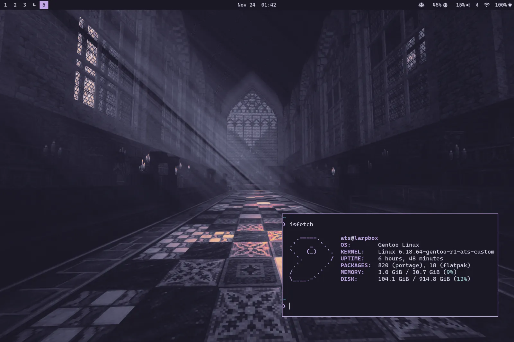
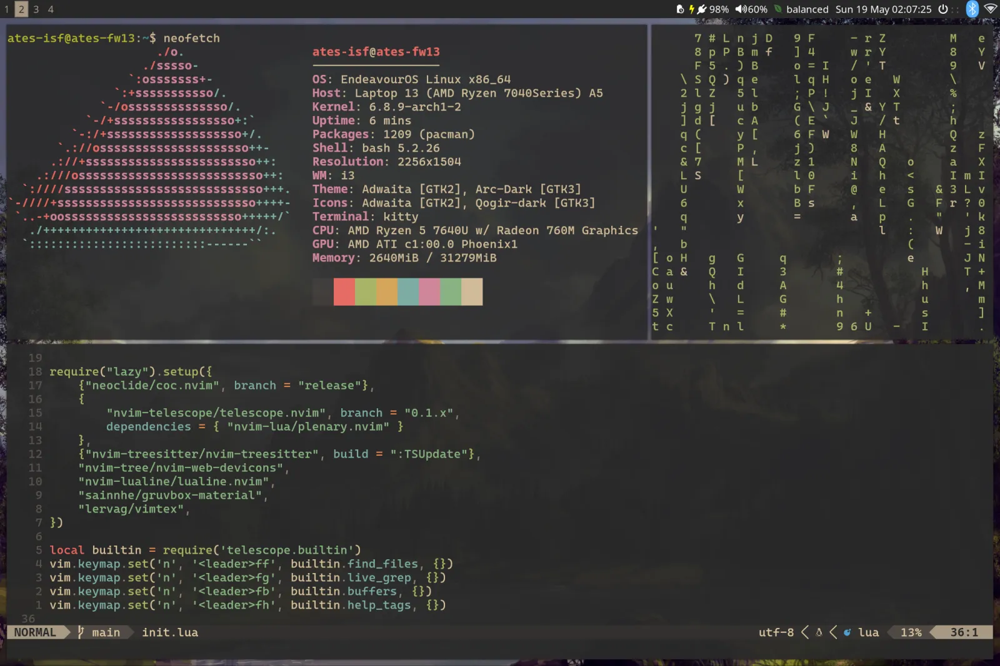
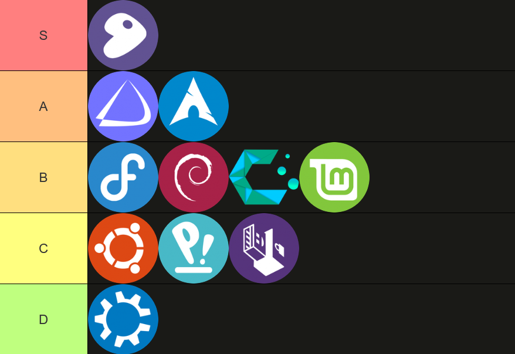

Current Linux Setup
Fun fact: This website uses the same colorscheme as my current Linux setup! (Rosé Pine) You can access my dotfiles here.
I'm currently running Gentoo Linux on a custom, stripped-down kernel
______________________________________
/ My kernel is 15.6 MB vs. 23.1 MB for \
\ the stock Gentoo Kernel /
--------------------------------------
\ ^__^
\ (oo)\_______
(__)\ )\/\
||----w |
|| ||
isfetch: my custom fetch, based on ufetch
.-----. ats@larpbox
.` _ `. OS: Gentoo Linux
`. (_) `. KERNEL: Linux 6.18.64-gentoo-r1-ats-custom
`. / UPTIME: 0 hours, 3 minutes
.` .` PACKAGES: 820 (portage), 18 (flatpak)
/ .` MEMORY: 0.8G / 30.7G (3%)
\____.-` DISK: 104.1 GiB / 914.8 GiB (12%)
Current Desktop

My old EndeavourOS setup from May 2025

Tierlist of Linux Distributions I have tried
